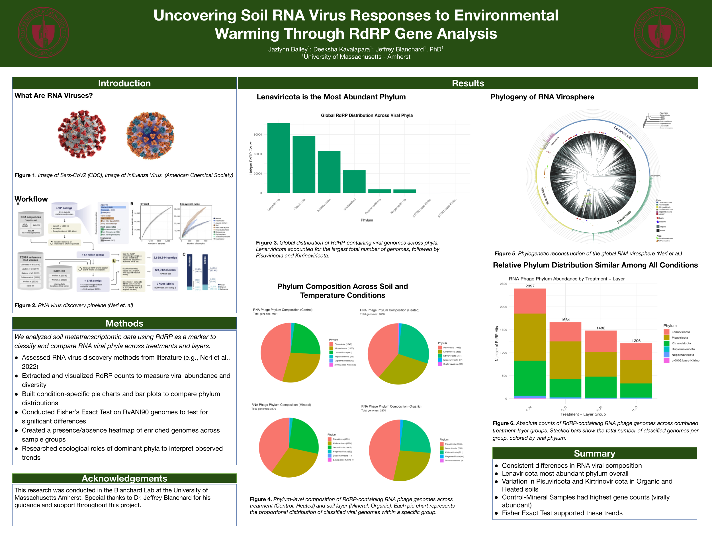
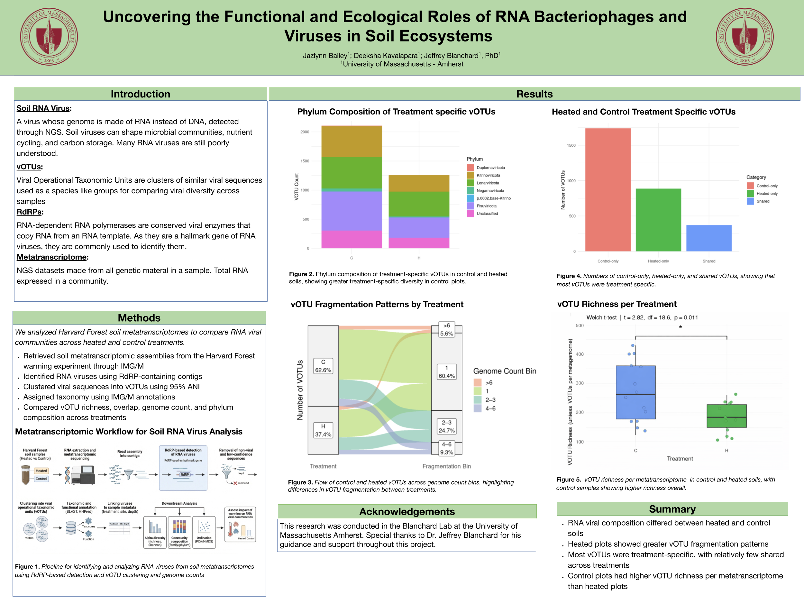

MassURC 2025 Presentation
Uncovering soil RNA virus responses to environmental warming through RdRP gene analysis.
Poster created and presented by Jazlynn Bailey for MassURC 2025.
Information Technology and Coding
This page highlights my coding-centered work across biological datasets, RNA virus research, conference presentations, and scientific communication. My work mainly focuses on using computational tools to organize complex datasets and turn them into clearer research insights.

Image created by Jazlynn Bailey using Canva, 2026. Canva elements used under the Canva Content License Agreement .
MassURC Presentations
These MassURC presentations reflect my work computationally organizing, analyzing, and communicating biological datasets.

Uncovering soil RNA virus responses to environmental warming through RdRP gene analysis.
Poster created and presented by Jazlynn Bailey for MassURC 2025.

Computational organization and analysis of biological datasets for research communication.
Poster created and presented by Jazlynn Bailey for MassURC 2026.
Slide Galleries
These slide decks show my work in computational biology, thesis research, RNA phage analysis, and scientific storytelling.
A formal research presentation focused on computational metatranscriptomic analysis, RNA viral diversity, and environmental warming.
Slide deck created and presented by Jazlynn Bailey, 2026.
A research presentation focused on RNA phage analysis, RdRP detection, and computational approaches to studying environmental viral datasets.
Slide deck created and presented by Jazlynn Bailey, 2025.
Technical Focus
RStudio, Python, MATLAB, GitHub, Quarto, high-performance computing, biological datasets, data cleaning, statistical analysis, visualization, and reproducible research workflows.